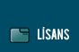

|  | |||||||
| < TÜRKÇE // ENGLISH > | |||||||
|
Kalite Takımı
Uludağ Projesi, İlk Adımlar
(Kalite Takımı) A. Murat Eren (meren@uludag.org.tr)
Özet: Bu belgede Uludağ Projesi Kalite Takımı'nın amacından, nasıl bu takımın bir üyesi olunabileceğinden bahsedilmeye çalışılmıştır. Eğer kalite@uludag.org.tr e-posta listesine üye olacaksanız, bu belgeyi okurken lütfen kafanızdaki kalite tanımını bir kenara bırakınız ve belgeyi sonuna kadar okuyunuz. 1 Giriş
Uludağ Projesi Kalite Takımı, projenin işleyişini hızlandırmak ve
yardım etmek isteyen her seviyedeki insan için iyi bir başlangıç noktası
oluşturmayı hedefler. Eğer sürekli kendinize ``ben de yardım etmek
istiyorum'' diyorsanız bununla beraber nereden başlayacağınızı bilmiyorsanız
işte size fırsat. İşinin bir kısmı da yeni gelenleri projeye ilgi
alanlarına ve becerilerine göre adapte etmek olan kalite takımı size
yardım edecektir.2 Bir Kalite Takımı Üyesi Ne Yapar?
Kalite takımı insan kaynağı açısından kendi kendisini finanse eden
bir yapıya sahiptir. Gelenler, kendilerinden önce gelenlerin yardımı
ile akışı öğrenir, nasıl yardım edebileceklerine karar verirler. Uludağ
geliştiricileri ve etrafındaki programcılar yoğunlukla program geliştirmektedirler,
fakat etrafta yapılması gereken ve yardım olmadan yapılması güç olan
bir çok ciddi ve değerli iş vardır. Yerelleştirme çalışmaları, belgeleme
çalışmaları, uygulama ve sürüm testleri, hata raporlama, kullanıcı
grafik arayüzlerinin test edilmesi ve değerlendirilmesi, web sayfalarının
ve belgelerin uluslararasılaştırılması, projenin doğru şekilde tanıtılması
ve yeni insanlara ulaşmak gibi çalışmalar yukarda bahsedilen ihtiyaçlara
örnek olarak gösterilebilir. Projenin e-posta listesinde bulunmanız,
fikir beyanında bulunmanız ve gelişmeleri takip etmeniz bile, projenin
bir destekçisi ve geliştiricisi olarak nitelenmenize yeterlidir; bu
takımın işi bu katkınızı ihtiyaç duyulan noktalara kanalize ederek
projeye gelen katkı kalitesini arttırmak ve belirli bir seviyenin
altına inmemesini sağlamaya çalışmaktır.3 Kalite Takımı Üyesi Olmak İstiyorum!
Şahane! Kalite takımı üyesi olmak için yapmanız gereken tek şey, kalite@uludag.org.tr1 e-posta listesine üye olarak kendinizi tanıtmanız, hangi konulara
ilgi duyduğunuzu, neler yapmaktan zevk aldığınızı ve isterseniz şu
ana kadar nelerle ilgilendiğinizi yazmak. Bu sayede listedeki diğer
katılımcılar ve geliştiriciler, karşılaştıkları sorunların sizin çözebileceğiniz
kısmı ile ilgili sizden yardım isteyebileceklerdir. Bu anlamda kalite@uludag.org.tr
listesi ve arşivleri diğer listelerden farklı olarak, sosyal bir insan
kaynakları bilgi ambarı olarak projeye yardım etmeye hazır insanların
bilgilerini barındıran bir iletişim listesi olarak görülebilir. Eğer
yardım etmeyi gerçekten istiyorsanız, yardıma ihtiyaç olduğunda sizi
bulabilmemiz için bu listede olmanız ve bilgilerinizi göndermeniz
gerçekten çok önemlidir. Bu listeye üye olup hakkınızda bilinmesi
gerekenleri listeye gönderdikten sonra sizden en iyi şekilde faydalanma
sorumluluğunu bize devretmiş olursunuz.4 E-posta Listesine Üye Oldum, Ne Yazayım?
Bu e-posta listesine üyelik işlemlerinizi tam olarak bitirdikten sonra
e-posta listesine yukarda da bahsetmeye çalıştığımız gibi kendinizi
tanıtan bir mesaj atmalısınız. Bu mesajın içeriğinde bulunması gerekenlerin
en önemlileri bizim için ne yapabileceğiniz ve bize ortalama ne kadar
vakit ayırabileceğiniz bilgisi. Aşağıda bize yardım edebileceğiniz
alanların bir listesini görebilirsiniz:
Bu e-posta listesine üye olarak kalite ekibine katılmak demek, ``elimi taşın altına sokmaya hazırım!'' demektir. |
|||||||
| Ulusal Dağıtım sayfalarında bulunan bilgi ve belgelerin, kaynak gösterilmek koşulu ile kullanılması serbesttir | |||||||